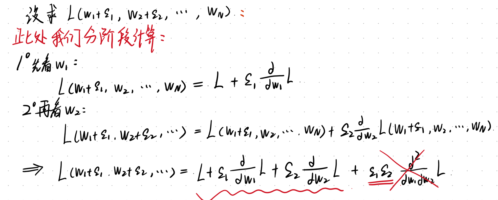

多元微积分(1)
高维微分
对于现代神经网络而言，我们前面所说的单变量以及不够用了。模型通常包括上亿个可训练参数，我们将这些参数记为一个N维向量： \pmb{w}=(w_1, w_2,···, w_N)^T 网络的损失函数则是这些参数的多元标量函数： L(\pmb{w})=L(w_1, w_2,···, w_N)
当我们想要变动其中的一个参数w_i，而其他参数保持不变的时候，损失函数的变化与单变量微积分中的情形并无本质区别。 L(w_1, w_2,···, w_i+\epsilon_i,···, w_N)=L(w_1, w_2,···, w_N)+\epsilon_i \frac{\partial L}{\partial w_i}
这里的\frac{\partial L}{\partial w_i}称为L对w_i的偏导数，计算的时候，只需要把别的参数都当作常数，对w_i求导即可。
实例：设L(x, y)=x^2+3xy+y^2，则 \frac{\partial L}{\partial x}=2x+3y, \frac{\partial L}{\partial y}=2y+3x
当你变化同时变化两个参数的时候，如下图：

式子的最后一部分，因为他是两个无穷小量相乘，我们直接省略。我们通过这个例子可以得出，当我们同时改变多个参数时，设增量向量为$ =(_1, _2,…, _N)^T$,则损失函数的一阶近似为： L(\pmb{w}+\pmb{\varepsilon})≈L(\pmb{w})+\sum_{i=1}^{N}\varepsilon_i\frac{\partial L}{\partial w_i}
将所有的偏导数也组织成一个列向量，即梯度向量(Gradient): \nabla_{\pmb{w}}L=[\frac{\partial L}{\partial w_1}, \frac{\partial L}{\partial w_2},...,\frac{\partial L}{\partial w_n}]^T
于是上述展开式可以简洁的写为向量点积形式： L(\pmb{w}+\pmb{\varepsilon})≈L(\pmb{w})+\pmb{\varepsilon}^T\nabla_{\pmb{w}}L
梯度的几何意义与梯度下降
梯度下降算法最贴近生活的一个实例就是下山。假设我们在山上的某个位置，我们要如何走才能最快到达山底呢？答案很显然，沿着山腰最陡峭的方向向下走。
具体方法步骤如下：确定自己所在的地方，查看并找到四周最陡峭的方向，朝那个陡峭的方向下山一定距离(learning rate)，看是否到达山底，如果没有到达则回到查看自己位置这一步，否则到达山底，任务结束。
梯度下降算法实际上和上面的爬山很类似了，我们可以把山体想象成一个三维空间平面，它就是我们要最优化的一个多元函数，我们的目的就是找到函数的最小值，即所谓的山底。上述的下山流程和梯度下降算法也是基本一致的，那个最陡峭的方向实际上就是函数的负梯度方向，因为梯度是函数变化最快的方向，沿着梯度向量的方向会使函数易于找到最大值，反之，沿负梯度方向也就能很快找到函数的最小值。
从近似式L(\pmb{w}+\pmb{\varepsilon})≈L(\pmb{w})+\pmb{\varepsilon}^T\nabla_{\pmb{w}}L可以看出： - 若\pmb{\varepsilon}^T\nabla_{\pmb{w}}L>0，损失函数值增加； - 若\pmb{\varepsilon}^T\nabla_{\pmb{w}}L<0，损失函数值减小。
这就引导出了神经网络训练中最核心的更新规则–梯度下降法： \pmb{w}\leftarrow\pmb{w}-\eta\nabla_{\pmb{w}}L 其中的\eta被称为学习率(Lr,Learing rate), 控制每一步的更新的步长。\nabla_{\pmb{w}}L则是控制更新的方向
我们说了这么多，那为什么我们选择梯度的方向呢？为什么这个方向就是最陡的呢？
假设我们沿某一个方向\pmb{v}移动步长\varepsilon(即\pmb{\varepsilon}=\varepsilon\pmb{v}，且||v||=1),则： L(\pmb{w}+\varepsilon\pmb{v})≈L(\pmb{w})+\varepsilon·\pmb{v}^T\nabla L=L(\pmb{w})+\varepsilon||\nabla L||\cos \theta
其中，\theta是方向\pmb{v}与梯度\nabla L的夹角，要使得损失下降的最多，需要使\cos \theta=-1，即\pmb{v}与\nabla L的方向完全相反，这就是为什么梯度前面是负号的原因。
直观理解：梯度\nabla L指向损失函数增长最快的方向，因此梯度下降就是反着走——每沿负梯度方向走一步，损失就变小一点。
故我们可以总结一下梯度下降法的流程： 1. 随机初始化\pmb{w}; 2. 计算梯度\nabla_{\pmb{w}}L; 3. 更新参数\pmb{w}\leftarrow\pmb{w}-\eta\nabla_{\pmb{w}}L; 4. 重复2-3步，直至收敛。
从数学上证明了：神经网络训练时，只需计算每个权重的偏导数，然后沿负梯度方向更新所有权重即可。我们就可以降低训练集上的Loss值，只是快慢问题罢了。
优化问题的数学说明
优化问题的数学表述是：给定函数 L(\mathbf{x})，寻找 \mathbf{x}^* 使得 L(\mathbf{x}) 达到最大或最小。
在简单问题中，我们可以通过求导并令导数为零来得到解析解。例如：
f(x) = x^2 - 4x + 3 \Rightarrow f'(x) = 2x - 4 = 0 \Rightarrow x = 2
但在深度神经网络中，参数维度极高，损失函数极为复杂，不可能写出解析表达式。因此，我们只能依赖数值优化方法——通过迭代不断更新参数，逐步逼近最优解。例如我们前面介绍的梯度下降法。
下面介绍几种特殊点：
令梯度为零的点称为临界点（Critical Point）或驻点（Stationary Point）：
\nabla L(\mathbf{x}) = \mathbf{0}
临界点只是可能的极值点，并不一定是全局最优。在高维非凸优化中，我们更常遇到的是：
- 局部极小值（Local Minimum）：在该点附近损失最小，但不是全局最小；
- 鞍点（Saddle Point）：梯度为零，但沿某些方向损失增加，沿另一些方向损失减小。
鞍点的存在是深度神经网络训练中的核心挑战之一，这也是为什么在实际训练中，仅仅找到梯度为零的点是不够的。